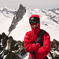
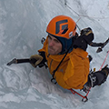
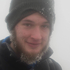
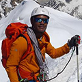
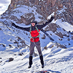

Ubes Diamond Anniversary Expedition
In July 2020, 6 students from the University of Bristol will travel to Milne Land, North East Greenland, as part of the Expeditions Society's Diamond Anniversary Expedition. At 71 degrees North, Milne Land sits entirely within the Arctic circle. Its granite summits rise directly from the surrounding fjords and glaciers within, many of which at altitudes of 1000-2000m remain untouched. The aim of the expedition is to attempt a number of alpine and rock first ascents of the peaks in the area around and North East of Korridoren glacier.
Team Members
Prepare for a full day of discussion from some of the web's best and brightest.
-
Alpine
Expedition Leader
Danai Osmond
Having spent two years as an Officer in the British Army after leaving school, Danai is now studying for his undergraduate degree in Geology at the University of Bristol. Never living in a country for more than a year during his childhood, exploration has become ingrained in Danai�s nature and often on weekends in secondary school, he would hop on the train to scale the peaks and ridges of the Brecon Beacons and Snowdonia by himself. Having spent part of two summers in the Alps, Danai is spending this summer in Saas Grund to cement his application to become a full member of the Alpine Club. It is no surprise that Danai will be with the alpine team in pursuit of more incredible ridges. That said, Danai has racked up over 50 leads of up to E1 trad and 6b sport, cursing at Avon limestone for the vast majority. Danai is also a landscape and adventure photographer, having owned a DSLR since his first days in the mountains; he is particularly looking forward to the multi-day boat trip through the iceberg-laden Scoresby Sound and sunrise views from summits.
Alpine Team Member
Tom Alford
The most experienced member of the Alpine team, Tom has been tempted from his Kyrgyzstan plans for at least another year to join us in Greenland. Tom has completed four summers in the Alps, with an alpine climbing grade of E2/D+. He has also climbed up to 7a and WI4 in Norway. Perhaps it is his countless nights bivvying on glaciers that fuels his motivation to climb in remote places and put up first ascents?
Alpine Team Member
James Wheeler
A second year PhD candidate at the University of Bristol, James can often be found on the slabs of Avon Gorge in the evenings after work. A graduate of the Jonathan Conville Alpine Course, he has two summers of alpine experience with routes up to AD+. He also has three scottish winters of experience, with grades up to scottish IV, and climbs sport up to 7a and trad up to E2 onsight, with one E5 in the bag. In his application, James wrote "I am unlikely to get another chance to go to where i can indulge in playing in the mountains", a sentence which perfectly sums up his ethos.
-
Climbing

Climbing Team Leader
Haniel Heins
A master's student studying hydrology at the University of Bristol, Dan is a climber, caver and leader of our expedition climbing team. Originally from New York, he has called many places home, including Chicago, Tennessee, South Dakota, and Bristol. His childhood obsession with studying and exploring rocks and landscapes has pushed him to both study geoscience and pursue climbing and caving. Over the past five years, he has climbed across the UK and US, with roughly 500 leads, onsighting up to E3/5.11- trad and 5.12a sport. His favourite areas tend to be full of adventurous climbs on striking granite formations, namely the bold spires of the Needles of Custer State Park/Mt Rushmore and on the soaring peaks and domes in the High Sierra. When not climbing up rocks above ground, he is exploring caves below, having over the past four years spent hundreds of hours mapping the edges of Mammoth and Jewel Caves, spending up to four days underground at a time. In July, he will be joining the Cambridge Caving Club on their expedition to discover new cave passage in the complex vertical systems of the Loser plateau in the Austrian alps.
Climbing Team Member
Peter Rosso
A PhD candidate, out of the office Peter is as strong a climber as he is a photographer. He comfortably climbs trad E2 and 7a+ sport and is pushing his training and grades this year more than ever. Peter is lucky enough to be from north east Italy, in close proximity to incredible climbing. He also has a serious amount of alpine experience, with multiple routes at D+. Peter has taken a specific interest in big wall climbing over the past two years, and this summer he is out on a bolting expedition. This is not the only expedition he's on between now and Summer 2020, with three weeks of winter climbing planned in the Maritime Alps this year. One of his climbing heroes, as is Danai's, is Jimmy Chin. Peter would like to depart from greenland with a complete skillset to document what it will likely to be one of the most remarkable experiences of his life.

Climbing Team Member
Clara Cottet
Clara is in her final year at Bristol, and there would be no better way to top her previous UBES expeditions than with a finale in Greenland (although not much better than her first expedition with UBES to Georgia). Clara leads sport to 6a, and is working hard with the climbing team to develop her big wall skills over the course of the year. She is a graduate of the Jonathan Conville Alpine Course, has spent time on Ben Nevis in scottish winter (the mark of any good British Mountaineer?). More than anything, she misses the more adventurous side of mountain and would give anything to escape the all-too-common queues. She'll be fresh in Greenland too, with six weeks in the Alps planned directly before the expedition!
-
Support
Coordinator
Charlie Harding
Charlie just might be the most integral member of our team. Over the course of the expedition, he'll be at hand to coordinate our teams, answer routine calls and manage any emergencies. He'll also keep everyone updated with our endeavours! Charlie has completed expeditions to Georgia and the Balkans, and trekked the jungles of the Kelabit Highlands, Borneo. He's been across the channel this year, and has exploited his proximity to the alps fully.
About Milne Land
Milne Land is the third-largest island in Greenland, after the mainland itself and Disko Island. It is surrounded by the waters of Scoresby Sound, the largest fjord in the world. Its extremely remote nature means that most of the incredible granite walls remain untouched, with only a handful of expeditions to the area in recorded history.
"Milne Land is a large island within Scoresby Sund and, so far, very few climbers have exploited its considerable potential for high standard, technical [alpine and big wall] first ascents."
Sponsors and partners

Objectives
The climbing team aim to put a new route up Leviathan, a huge granite wall estimated to be around 40 pitches opposite Orca, a 5.10+ A2 route established in 2008 by a major Japanese expeditions. There are a number of backups and secondary objectives, including a pair of granite towers at the mouth of Korridoren assumed to be called Scarabee.
The alpine team will aim to put up a number of mixed alpine first ascents towards the north end of Korridoren up to grade AD+, including extensive photography of the area, which will be supplied with all mapping to future expeditions in the area.